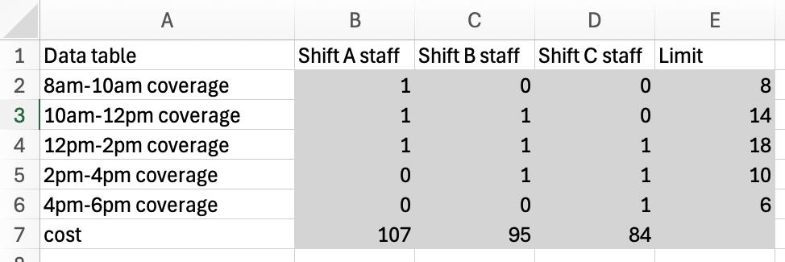
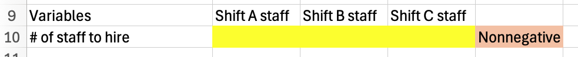
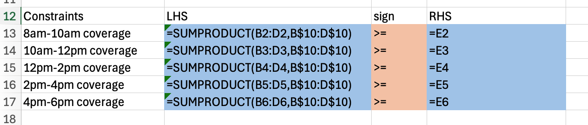
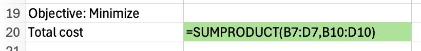
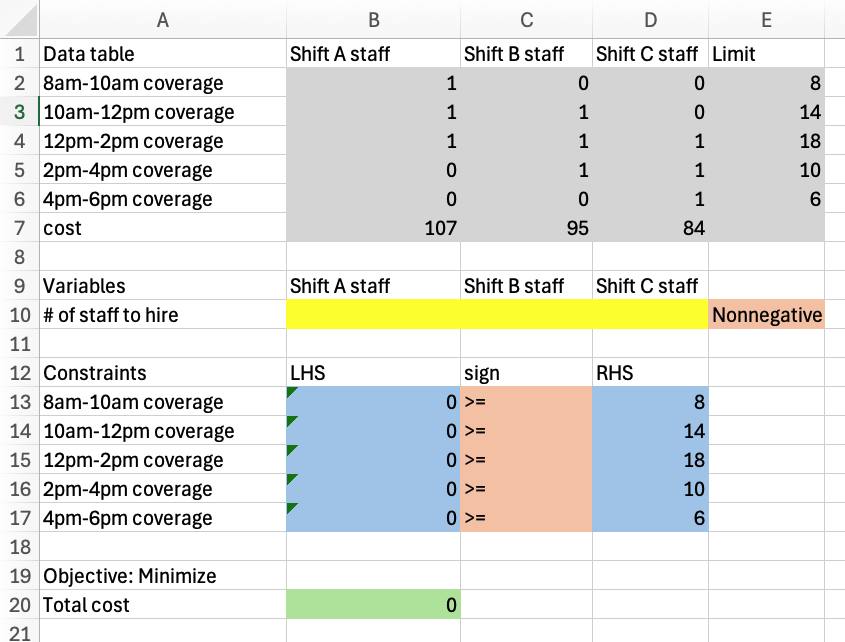
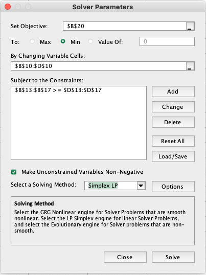
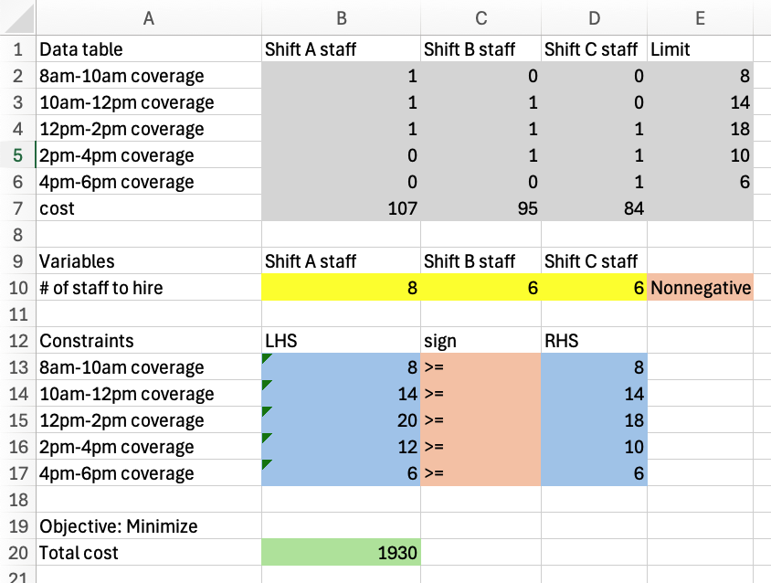

Responses to Week 3 Poll Questions
MGMT 306
Can you go over again how to solve an LP model in Excel?
Here is an example from start to finish. Let’s imagine we have the following problem description:
A company needs to hire staff for a customer support help desk. Staff can be hired on one of three shifts:
- Shift A staff work from 8am-2pm and cost $107 per day
- Shift B staff work from 10am-4pm and cost $95 per day
- Shift C staff work from 12pm-6pm and cost $84 per day
Management has set coverage requirements:
Time slot Required staff 8am-10am 8 10am-12pm 14 12pm-2pm 18 2pm-4pm 10 4pm-6pm 6 Write an LP model to minimize total costs while meeting coverage requirements. Solve this LP in Excel.
We will use the variables \[\begin{aligned} &A&&\text{number of staff to hire in shift A}\\ &B&&\text{number of staff to hire in shift B}\\ &C&&\text{number of staff to hire in shift C}\\ \end{aligned}\] and consider the LP model \[\begin{aligned} \min\quad & 107 A + 95 B + 84 C &&\text{total cost}\\ \text{s.t.}\quad & A \geq 8 && \text{8am-10am coverage}\\ & A+B \geq 14 && \text{10am-12pm coverage}\\ & A+B+C \geq 18 && \text{12pm-2pm coverage}\\ & B+C \geq 10 && \text{2pm-4pm coverage}\\ & C \geq 6 && \text{4pm-6pm coverage}\\ & A,B,C\geq 0 &&\text{nonnegativity} \end{aligned}\]
To implement this in Excel, the first thing we will do is to write a data table with all of the coefficients in our LP model. The data table will have:
- one column per variable, followed by a “limit” column
- one row per constraint (other than nonnegativity), followed by an objective row

Next, we choose some cells in the Excel sheet for our variables. In this case, since our model includes nonnegativity constraints on the variables, we will also indicate that on the Excel sheet.

Next, we will implement the constraints in Excel. We will compute the left-hand-side of each constraint using a
sumproductbetween the variable cells and the coresponding row of the data table. We will use a formula to copy the right-hand-side of each constraint from the data table itself. I have used a dollar sign$to freeze the row-reference corresponding to the variable cells to allow myself to autofill all of the left-hand-side formulas.
Finally, we will use a
sumproductformula between the variable cells and the final row of the data table to implement the objective function.
And the completed Excel model:

Finally, we will use Solver to solve this Excel model. In the dialog, we will declare the objective function, that this is a minimization problem, all of our constraints, that our variables are nonnegative, and that we would like to use
Simplex LPas the solution method.
After, hitting solve, Solver reports “Solver found a solution. All constraints and optimality conditions are satisfied.” This gives us the following solved Excel model:
